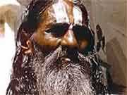

|
|
有哪一个人你在这个聚会里面感到主感动引导你，你做奉献，你牢牢记住今天你把自己奉献给主，那么今天晚上有一个奉献的聚会，你凭着你在神面前已经约定的，你在神面前所已经做的反应，你到台前来把自己交托在主的手里，愿主恩待赐福你们，使你们以后的道路，比以前的道路走得更在神的旨意和神光明的道路中间。
我们大家一同来读圣经罗马书第一章第十三节一直到第十七节， 我们一同来看： 「弟兄们！我不愿意你们不知道，我履次定意往你们那里去，要在你们中间得些果子，如同在其余的外邦人中一样；只是到如今仍有阻隔。无论是希利尼人、化外人、聪明人、愚拙人。我都欠他们的债。所以情愿尽我的力量，将福音也传给你们在罗马的人。」
|
第十六到十七节一同开声来读：「我不以福音为耻；这福音本是上帝的大能，要救一切相信的，先是犹太人，后是希利尼人。因为上帝的义，正在这福音上显明出来；这义是本于信，以致于信；如经上所记：义人必因信得生。」
「我不以福音为耻；这福音本是上帝的大能，要救一切相信的，先是犹太人，后是希利尼人。因为上帝的义，正在这福音上显明出来；这义是本于信，以致于信；如经上所记：义人必因信得生。」
「无论是希利尼人、无论是化外人、无论是聪明人、无论是愚拙人，我都欠他们的债。」
保罗在这里很清楚的提到他里面的一个伟大的心志，有一个伟大，宽宏的大量，在他里面有一个很大的负担，就是把福音传给一切他可以遇见的人。我们在这一段的圣经里面，看见这个罗马书的序言，是一个普世性
的心灵，普世性的关怀，一个普世性的异象。今天我们要很谨慎的把「普救论」和「普世的所谓领受神同样的启示，在不同宗教里面的这种神学思想」以及「福音的普世性
」分开来。我再讲，这三件完全不同的事情。第一句话，叫作「普救主义」，或者「普救论」
(universalism)，也就是「基督为全世界的人死，所以主动的把所有在罪恶中间的人都救出来了，不论他们信主或者不信主，因为基督既然为全世界上的人死，所以全世界的人都一定会得救的」。这是一种新派的学说，是一种错误的神学思想，这是一个与圣经的真理相违背的道理，
是福音派思想的仇敌， 这是错误的神学，这个叫作 universalism 普救论的神学是我们不接受的。
第二样、许多新派的思想又认为在其它的宗教里面照样有神的启示，是与基督教的启示是有同样的源头，有同样的价值，有同样的意义，不过只有不同的程度而已。这种「普世领受启示」的这种新派的神学思想乃是今天有许许多多不承认基督的独一性
、基督的完整性、基督的绝对永恒性的福音而产生出来的。这样的思想不但在外国，不但在十九世纪，已经在二十世纪末叶的台湾开始盛行了。有一些的传道、牧师，有一些的神学家，他们认为：「你可以在佛教里面看见基督向他们显现。你可以在佛教里面看见有基督的灵在他们中间所做的启示。你可以在净土宗里面看见跟基督教很靠近的那些思想。你可以在神道教 (Shintoism) 里面、印度教 (Hinduism)、 道教 (Taoism)、佛教 (Buddhism).... 这些伟大的宗教都有一位不同的上帝，戴上不同的面具，所做的不同的启示。但是里面有一些与基督教这么靠近，因为是同样的一位神在不同的民族，在不同的文化，在不同的宗教中间
显示过自己，这个理论是我们纯正福音派信仰所不能接受的。因为这是与圣经的原则相违背的。
这第三个， 就是我们相信福音的普世性。这个福音的普世性和 universalsim
和 Universal revelation of the true God 是不一样的。福音的普世性是上帝为全世界预备了在基督里独一的福音。（
请你把 bass 的部份减少20%，你们调音的人要非常敏感声音，因为你们是在音里面做专家，所以耳朵要特别专。比如昨天早上校园同工唱诗的时候，钢琴的声音比唱诗的声音放大十倍，那么诗班就听不见
了，只有听见钢琴的声音，这不对的。所以你们要敏感，在一切事情上要很留心、注意、敏感、你才能被神用得更好。否则的话，练得半死，结果听不见，只有听见钢琴独奏的声音。那就很得罪那个同工。这是很小的事情，但是对敏感的人小事变成大事。所以如果你敏感，你就可以在小事被神重用得更好了。一个男人上台讲话的时候，你要把低音减少一点，女人上台，你要把高音减少一点，那么中国人，外国人都不一样的。音量大，音量小都不一样，你要非常敏感。我盼望在这十年中间有很多专家可以训练出来。因为我到处去看见很所谓
professional 实在不够资格做 professional 所以我们还要训练很多的人，我们继续讲下去。）
我刚才讲到哪里？这个 universalism 和 universal revelation
of the same God 这两个都不是我们的理论，也不是圣经的思想。我为什么这么严格，这么挑剔，要这么严谨的和你们谈到准确性
的问题？不是「深浅」的问题，不是「多少」的问题，是「正误」的问题决定方向。所以如果我们今天说「都是一样的，都是传福音的」，你就囫囵吞枣不分是非，你很容易让教会开一
道大门，使许多错误的思想进来。就像我昨天说的，很可能在一代之间我们的福音信息已经变质了，所以求主保守我们，给我们这样的敏感，使我们很严谨的心奉献给神，我们丝毫不妥协，我们才能在神的旨意里面忠心到底。我们今天在思想到第三件的时候，与第一、第二、不同的方面在哪里？就是神借着独一的基督，借着完整的基督，那永恒的基督在暂时中间显现，要让这个已经成全的绝对性
的福音成为普世独一的盼望。所以，不是神在普世中间有所启示，因为有所缺乏所以在基督里把更完全，更高尚的一种启示下来做为其它启示不足的补充。不是的，乃是这独一性
，在基督里面我们回到上帝的面前。
|
耶稣基督说，「我就是道路，我就是真理，我就是生命。」接着说：「若不借着我，没有人能回到父那里去」（参：约翰福音：14 章 6 节）。这一句话是新派所不能接受的，这一句话是其它的宗教所要排斥的，这句话是许多人认为基督教自高自傲，看不起其它的宗教，排斥其它的文化把自己放在世界最高的峰来轻看别人的一种帝国主义的思想。所以他们认为，很可能，甚至有一些绝对的说，这句话不是耶稣讲的。
|
|
甚至连瑞士的大哲学家雅斯培 (Karl Jaspers, 1883-1969)
在他的书里面括号说「耶稣没有讲这句话。」我告诉你，这句话是基督教的精髓，这句话是我们信仰重心里面最重要的一个保证，这句话告诉我们在基督里我们回到�k那里去，再回到父那边去。在这句话告诉我们，除了�k以外，没有别的救法（参：使徒行传：4
章 12 节）。 在这一句也就成为众人的绊脚石；这一句也就成为其它的宗教不能接纳基督教的原因。而许多基督教所谓最高层的领袖正在慢慢的放弃自己的绝对性与这个相对的世界、与这个罪的世界妥协，这是我要争战的原因。耶稣说：「若不借着我，没有人能到父那里去」。他是独一的中保，而全世界的人都只能在基督里才能与神产生和好。只有基督所献的祭才成为解决罪恶的不二法门，就因为耶稣基督的宝血使我们
与神之间的关系，从前隔绝了，现在复合了。只有借着基督的宝血、基督的十字架、和基督无罪的圣洁生活，成为神人之间的中保我们回到上帝的面前，这是绝对的福音，这是不可妥协的事情。我盼望以后这一代的青年，这一代的知识分子为着纯正的，绝对的福音，我们好好的献上自己，生根建造（参：歌罗西书：
2 章 7 节），勇敢讲明这福音的奥秘，这样，我们才成为神忠心的见证人，在这时代高举基督的十字架。
保罗为这个福音，所以他向罗马进军。保罗为这个的福音，他向西方最高层的知识分子进军。保罗为这样的一个福音他向当时夸越欧亚，在许多国家中间，甚至在非洲的北部有了最大的版图、最大的力量、最大军事、政治能力的罗马帝国他讲这样的话语。「无论是希利尼人、化外人、聪明人、愚拙人，我都欠他们的债」（罗马书：1 章 14 节）。当保罗讲这一句话的时候包含什么意思呢？为什么他不说「无论希利尼人、无论罗马人（这卷书是写给罗马人的，但是罗马的字跑不出来）。保罗为什么不说，无论是犹太人，无论是撒玛利亚人，无论是希利尼人，甚至你们罗马书人我都欠你们的债」？保罗在这里只有提到一个文化的名字，提到三种不同阶层的人的范围。保罗说：「无论是希利尼人、无论是化外人（这化外人就是我们中国人所说的那野蛮人，或者那些蛮夷之族，那些没有文化之族，没有开化的民族，就是在长城北边那些只有武力而没有礼仪，只有军事，而没有思想；
只有征服的野心，而没有真正的头脑的那些民族）。」保罗提到这个化外人原是指着北方那些高卢，或者马其顿以北的那些没有高深文化的人，对他们来讲的。但是保罗提到希利尼人的时候，这就是提到当时最有教养，最有文化思想，最有哲学的训练的那些受希腊文化影响的人。
为什么保罗在这里不提到罗马？保罗只提到我愿意把福音传给你们在罗马的人。那是因为罗马人征服希腊的结果是被希腊征服回去了。罗马人征服希腊的土地，结果是让希腊人的思想征服他们的头脑。所以罗马人的得胜是无知的，希腊人的得胜是思想的。罗马人的得胜是暂时的，希腊人的得胜是永远的。罗马人的得胜是外表的，希腊人的得胜是内在的。罗马人的得胜是一下子可以再失去的，希腊人的得胜是征服了他们的内心世界，他们的思维，他们的结构，他们整个文化的重心完全被希腊人变了。不但是他们的逻辑，他们的科学，他们的研究受了希腊影响。那这样，我们看见罗马帝国其实从外表来看他用军事的力量扩张得着了许多的版图，但是在文化，在思想这方面
，已经成为希腊的奴隶了。所以保罗不需要说，我要征服你们在罗马的人。他就不必把罗马当做是一个特别的模式，做为传福音的对象。
保罗提到世界上有聪明人；保罗提到世界上有笨的人；保罗提到世界上有化外的人，还没有文化的人，这些没有文化的人他们就以体力，军事和战争当作他们的夸耀。所以当他们能够把体格练得高大的时候，他们认为这就是他们得胜的基础，是他们存在的保证，是他们强国之道。但是希腊人的看法不是如此；所以希腊人和罗马人不一样；希腊的雅典和北方的斯巴达是很不一样的。斯巴达人有一个习惯，就是为了要国家强盛，他们需要有身体的发达，所以健康的身体是强盛之因，好的婴孩就从他有多大多重，来看他以后对国家有多少的贡献？你看有这么笨的人吗？所以就像毛泽东说：「健康第一」那样笨的事情。所以当斯巴达人把他们的婴孩生出来以后，第一件事，量多少？在六十五公分以下的，就杀死他。在六十五公分以上，更长的就留下他，所以等他们的孩子个个长大的时候，都是很可怕，很威武的，个个像阿里和泰森那样的人。但是结果斯巴达为什么被雅典打败呢？因为他们只有勇无谋。他们有体无灵，有身无心，他们有力无脑。他们有军事，但是没有计谋；他们有武器，但是他们没有思想；所以思想
的功能在历史中间是唯一能使世界的文化继续下去的一个很重要的因素。
从前有两个人他们比赛哪一个人更有力量。好，抓到一只蚂蚁看谁先把它杀死？那个孔武有力的人就把蚂蚁抓来就打拳打下去。打下去以后看，没有死。他再打第二次，更大力，打下去，也没有死。第三次他尽他所有的力量打下去，蚂蚁还在走，原来蚂蚁就在他这个缝里面走来走去。那个聪明人看到蚂蚁，用一根小指头一压就死了。所以不
在乎你有多大的外面的力量，在乎你的智能，你里面的智力是如何？那这样，希腊所以变成保罗唯一提出来的一个文化的名称
---- 希利尼人我欠他们的债。这句话是什么意思呢？因为在当时中间，希利尼的文化已经变成整个人指挥西方社会活动 的一个背后的动因了。我个人给文化一个很特别的名称：「文化是社会的精神」，或者「文化是社会的灵魂」；换句话说指挥身体活动
的，是灵魂的力量。照样，影响整个社会动向的是灵魂，就是那个背后的文化的影响。文化里面的价值观，文化里面建立起来的标准，Standard,
criterion and concept of value in the culture system becomes
the soul of the governing power in the society and social
action. 所以 social activities was dominated and determined
by the culture force 所以这个文化的力量成为社会力量的推动 因， 这样的，保罗看这件事情，看得很准。
今天我们看罪人，你不是单单看他是荒宴、醉酒、打人、赌博，悔改离开这些你就已经结束了。你还要用文化的眼光去看，这些行动
的背后是哪一些精神去支配他的？你对中国人讲道的时候，你不能不明白这些使中国人很难信主的文化背景是什么？当你对希腊人讲道的时候，你不能不明白这些使希腊人拦阻福音的文化背景是什么？
|
|
什么在中国人中间信主是这么难？因为中国人先有一个文化上的一个盾牌来抗拒基督教的思想。他知道基督教是好的，他知道基督教有许多可取的地方，但是，他很怕做了基督教就被社会认为是一个不要祖宗的人。所以这种「我一信主，不再祭祖」就使文化把我丢弃、轻看，使我受排斥成为一个文化不要的人，这样我信耶稣需要再三的考虑，我不能随便做决定。
|
为这就是为什么在中国中间向中国人传福音的中间你遇到许多与其它的文化的人所遇到不同的拦阻的原因。所以保罗深深知道这文化使命和福音使命之间的那个关系到底是什么？我们要把纯正的福音传开。但是在纯正的福音传开以前有许多文化的阻隔，有许多文化的盾牌，有许多文化上对福音抗拒的力量是我们应当了解的。保罗说：「无论是希利尼人、无论是化外人、无论是聪明人、无论是愚拙人，我都欠他们的债。」在这一句话里面至少有三个很大的思想观念在他里面。
第一样、在这里保罗清楚看见福音的「普世性」。福音是迎合全世界每一个民族需要的，没有一个人是不需要福音。保罗在这里让我们看见，第一个很重的思想观念，福音的普世性
。基督的福音不是单单为 犹太人。这是历史上一个很重要的从旧约到新约里面的一个突破。在犹太人的思想中间， 「犹太、犹太、犹太，.... 耶和华是以色列的上帝，耶和华特别爱以色列，耶和华在以色列，就是在亚伯拉罕、以 撒、雅各的这个路线的系统中间赐下他的福气」，是与�k成为「万邦万民的上帝」，这些已经记载在旧约里面的话语，他们不大注意。
我这几天正在看一本很厚的书《犹太主义的百科全书》，这是刚刚出版不久的一本书。我在注意思想犹太人怎样在种族狭隘的主义里面要包容神的恩典。但是我们看见基督说：「你们到普天下去，使万民都做我的门徒」（马太福音：28 章 19 节）的时候， 就给保罗有一个很特别的启发，这是一个突破，福音的普世性，道不是单单为犹太人，道不是单单为以色列，道不是单单为耶路撒冷，道不是单单为加利利，道也为希腊的文化、为罗马人、为化外人、为所有全世界的人，所以你们要使万民
Let all the nations become my citizen。而万民都成为我的门徒这是耶稣基督很清楚指导出来的一件事情。保罗抓到了这个重点，福音的普世性
成为他异象里面的一个广度；福音的普世性成为他传福音的对象的一个很重要的他眼睛所看到的那个境界。这个眼界太广，为什么？因为他看见了耶稣基督福音里面这个很重要的重点，这是普世性的。
第二样，保罗讲这句话，无论是希利尼人、化外人、聪明人、愚拙人。我都欠他们的债。第二样，就是每一个人都可以用福音去解决他们的困难。这是第二个信念。不但福音是为了全世界而预备的。每一个人、每一种民族、每一种阶层里面的人都需要福音，而福音可以供应他们的需要。所以我欠你们的债，所以他要付这一笔的债，这表示众人都需要这个福音所带出来的功能。每一个在世界上的人、每一种文化都可以从福音得者解决。这就是今天许多的人从这个信念中间得到一个很重要的大题，但是没有深深思考实用值价值和困难所在在哪里？许多基督徒常常会跟着别人讲一些很漂亮的、很总结性
的话语。所 以我们常常对人家说：「 Christ is answer. 耶稣就是一切的答案！」我们讲「
Jesus is 答案。Jesus is hope 耶稣是我们的盼望，耶稣是我们的答案。」你真的敢讲这句话吗？那我问几个问题看你怎么答？你说虽然耶稣是世界的答案，但是我不是，所以我不能答，那
么你自己问耶稣好了。耶稣把责任托给你，你就托回给耶稣？耶稣叫 我们成为世界的答案，我们面对世界的需要的时候，你真的相信耶稣是一切的答案，那你预备了多少？所以第三样，保罗讲这句话的意思表示他已经装备好了来应付世界的需要。我不要你们青年人只有「肯」的心，而没有「能」的追求。
You only have your willingness, but you have no pursuit of
your ability.
我们肯不肯？「肯！」我们能不能？「不能！」我们要不要传道？「 要！」怎么传？「不知道！」今天许多的奋兴会达到的目的就是把人
的「不肯」化成「肯」就结束了。肯的时候，流流泪、大哭、大喊， 流了眼泪以后，就软软无力，哭完以后就毫无能力做事情。然后过了
几年以后发现，我肯做，做不出来；做不出来就内疚，「哇！我不够 爱主，我从前奉献要做主的工，现在我没有做什么，怎么办呢？求主
赦免，求主怜悯。」再来一次奋兴会，再得着复兴，你肯不肯？「主 啊，我重新奉献，我肯。」肯了以后呢？又再不能，又再不做。以后
就在「肯」、「不肯」；「肯」、「不肯」下功夫。今天许多人就给 你训练班， 训练班....
但是我告诉你，训练是要叫你变成「能」， 从「不能」变成「能」；从不能变成能不是单从知识而来的，从不能 变成能需要有圣灵的智能，圣灵的能力。所以这首诗歌说，「求主赐
下智能与能力，使我传扬主你的信息。」
司提反他在世界上的时候，他是以智能与圣灵讲道众人抵挡不住（参 ：使徒行传：6 章
10 节）。大家跟我讲这句话，「以智能与圣灵讲 道，众人抵挡不住。」当他讲道的时候，智能从他的身上出来。圣灵 的能力也从他的语言里面表现出来。
|
所以那些听的人不但听到他讲的话充满智能，也听到他讲的话里面充满圣灵的能力，他们抵挡不住，唯一可能就是接受他所讲的道或者把他打死。结果他们决定把司提反打死。有一些人就认为这个司提反没有能力，所以结果被人打死了，这个司提反没有神的同在所以遇到了灾祸。对成功神学的人来说，司提反的结果是一个失败，因为他没有成功。
|
|
但是对我来说，这是在神旨意中间常常可能发生的事情，因为神的道产生了两个极端性 不同的对极的可能。第一，就是你成为馨香的气，叫一些人叫他活，叫一些人叫他死（参：哥林多后书：2 章 16 节）。你要兴起来使许多的人可以复兴，也使许多人跌倒（参：路加福音：2 章 34 节）。你做神的仆人，有许多人可以接受你，许多人可以抗拒你；你做神的仆人，爱你的爱得不得了，恨你的恨得不得了，这是很可能的事情。所以同样两个被圣灵充满的耶稣基督的门徒，彼得讲一次道，得到三千个人悔
改的果子。司提反讲一篇道，得到三千块石头丢到他身上来。你说，「彼得是神大大重用的，司提反是神不顾的」。「彼得是大有能力，圣灵充满的」。司提反是依靠自己的力量的吗？我告诉你，不是的，两位都是被圣灵充满的，两位都是神所重用的仆人，他们都做了同样的果效──挪动
了坟墓面前的石头。
你还记得耶稣对门徒说，你把拉撒路坟墓面前的石头挪开（参：约翰 福音：11 章 39
节）。为什么呢？石头不挪开，死人不能出来。 所以你把石头挪开，以后复活的大能来了，那死人就复活出来了，然后你解开（参：约翰福音：11
章 44 节）。第一、要挪开。 第二、要解开。挪开 ---- 除去罪的拦阻。解开 ---- 传道以后生活的表现得到新自由。挪开石头叫作
pre-evangelism。 解开绑布叫作 post-evangelism。 拉撒路出来！这个叫作 evangelism。那你听懂了没有？
当福音的大能，福音的本质没有彰显出来以前，我们需要做一些福音的预工，除去拦阻，除去许多福音的拦阻，像坟墓前面的石头需要被挪开一样的，这个叫作福音的预工，pre-evangelism。然后耶稣基督 以复活的大能说：「拉撒路，出来！那死人就出来了。」（参：约翰 福音：11 章 43-44
节）计志文牧师说，如果耶稣讲另外一句话怎么办呢？「死人出来！」拉撒路就出来了，一样不一样？他说，不一样 的。因为耶稣的能力太大了。如果耶稣说，「拉撒路出来！」那个死人就出来了，是照名字一个出来。但是耶稣的能力那么大，如果他讲
错了，他说，「死人出来！」全世界的死人都出来了。我们的主能力太大，�k一一呼名。�k拯救你的时候，叫你重生的时候，是呼召你的名字叫你出来。「拉撒路出来！」他就出来了。出来以后，解开叫他走。这个是已经有了福音以后另外的社会关怀，另外的、其它的工作要再做的、文化使命....
等等，这个叫作 post-evangelism 。那么，我说彼得和司提反都做了同样的工作，挪开了石头，为什么呢？彼得把那些石头挪开了以后，他们就信主。但是司提反挪开那些石头
的时候，他们就看见自己死的情形被发现了，他们就用石头打死上帝的仆人。我们看见耶稣基督在世界上的时候，也是照样，他把人罪恶的面具扯掉之后，犹太人就把他钉在十字架上，同样的的情形。但是这两个人都以福音的大能叫一些人活，叫另外一些人死。叫一些人得着复兴，叫一些人跌倒，所以都在福音的大能里面有分。
保罗在这里提到「无论是希利尼人、化外人、聪明人、愚拙人，我都欠他们的债 。」表示他已经预备自己要供应众人的需要；他已经装备自己为众人的需要已经在神面前预备好了。今天有许多的传道人，只有「肯」，
没有追求「能」。已经能了以后，没有保守「诚」。我盼望这三件成为我们事奉中间很重要的话语，「肯」、「能」、「诚」，第四个字
「恒」，大家说（重复）。你有真正的肯，神用你。不是照你所没有的，照你所有的。能，你所有的继续不断的追求，在有的上面再继续的长进，神更用你。第三，你「诚」，实实在在的做传道，诚诚实实的传扬主的道理。我一生有一个原则交朋友。我的朋友不多，我交朋友的机会比任何人都更多。听我讲道的有超过五百
万人。我所见的传道人几千个。我自己教过的牧师、传道人已经超过六百人。但是真正做我的朋友的，没有几个。我有一个很重要的挑选原则，就是「诚意
」的人，真诚的我做朋友。不诚的我从名单中间除掉。当我发现一个 人不真诚的时候，我开始看不起他。真诚！你做传道也是如此，你做神的仆人也是如此。你讲的话，是出于你纯洁的动
机，是出于你爱灵 魂的心。是出于你真正实实在在坦白，在真理面前真心要与人一同明白神的道而讲出来的吗？若是不是，你不能成为神忠心的仆人，这是第三样。第四样，恒。让历史印证你的事奉是真的。因为「真金不怕火炼」、「路遥知马力，日久见人心」，神以时间为试金石，神以时间为审判官，神以时间为见证人，看看你在末后的日子，是不是像起
初一样的事奉上帝？这个四个字成为事奉很重要的话语。
那么保罗在这里，我特别要大家思想的，就是希利尼文化里面三个重要的模式－第一天我听见你们常常惯用的名词，这「多元的社会」、「多元的社会」，保罗时代是「单元社会」，我听了很不顺耳，为什么很不顺耳
呢？是不是因为还没有六十岁所以不「顺耳」？孔子说「六十而耳顺 」，不是的。因为我发现你们用词有时候是跟人家用的。当教会领袖
开一些讲座的时候，把一些名词讲出来，你们就跟着把那些名词拿来用了。但是用的人原先的意义是什么，和你们用的时候你们能够了解
多少，常常有一个很大的距离。所以我请你注意，这「多元的社会」 是二十世纪的一个很重要的记号吗？是！但是不要忘记，保罗就在外邦人的世界中间传福音，他进入多元的社会。所以不要以为当时的世界是单元的，现在的社会是多元的。保罗说，「希利尼人，我欠你们
的债。化外人我欠你们的债。犹太人、外邦人、无论是主的、是奴的 、是希腊人、是外省人，是犹太人，我们是撒玛利亚人，是聪明人，
是愚拙人」，这已经把多元性的原则提出来了。所以，不要以为我们现在传福音的困难比保罗时代更大。不要以为我们处在特别复杂的社会使我们现在很难传福音，保罗时代很容易，不是的。我现在要解释希利尼文化里面三种重要的人生派系，而这三种人生哲学怎么样影响当时，使传福音遇到很大的困难，因为他们在多元社会里面产生互相
鼎立的那个局势，所以福音在这个环境中间很难做。
我昨天提到一句很重要，要我们思考的一句话。就是「为什么美国人敢在最会煮菜的民族中间开最大的菜馆（快餐店）？」你注意听那句话没有？你还感到很好笑。我很多事情叫你笑，不是叫你笑罢了，因为你笑的背后有很重要的使命要你去思想一件事情：「为什么美国人有这种雄心呢？」为什么中国人没有呢？美国人有投资的精神，有冒险的精神，有愿意用很大的代价去得到一些他认为有价值的，而他的价值观和我们的价值观不一样。因为我们的价值观被「金钱」两个字衡量，所以中国人的「价值」和「价钱」分不了多少。但是美国人不是如此，有哪一个亚洲的民族要花几万万万万美金去火星上面，用各样的仪器得到一个结论──没有一粒细胞，没有一个细菌；没有一个最微的生命在里面。有哪一个民族要花几十亿美金，跑到月亮去拿几块石头放在博物馆？你知道那个石头多贵？同样的钱可以买几千万颗金刚钻。月亮拿石头下来有什么用？美国人有这个精神，这种精神到底从哪里来的？我相信西方这种冒险、探险、投资、在各样的价值观里面去找到新的东西发掘出，不管付多少代价，是从基督教的精神和希腊的精神拿到的。从基督教对创造的研究，「神说我把万有放在你下面给你管理，天上的鸟，地上的兽，海里的鱼都在你的下面」
（参：创世记：1 章 28 节），人就成为自然的主宰。所以这个观念 和这个思想在中国文化里面很难找到种子。在希腊里面钻研逻辑、deduction、induction
这些的东西无形中已经在苏格拉底的系统里面有了。 不是培根 (Lord Francis Bacon, 1561-1626)
才发现的。亚里斯多德找到了这个 deduction 的 theory，syllogism 的原则，思考的正确路线，但是这些东西原先就是神原先就放在宇宙万有中隐藏着的道理，让人去把它发现出来，变成各样的科学来研究的。那这些成为希利尼文化很重要的东西。保罗就对这些人说，「你们虽然有希利尼文化，我还欠你们的债，我还要把福音传给你们。」
在希利尼文化里面曾经出现过几个不同的阶层，几个不同的历史阶段的第一个阶段是什么？就是对形上学的兴趣。这个形上学兴趣的动
机是什么？你注意听：形上学注意的动机不是单单在物质界里面被造为物质而生活的活物 The only being not only created for the material world and in
material world. 因为人不是单单被造在物质界，也不是被造在唯物之界，人之所以为人有另外一界，那个另外一界的存在，
使人不甘愿单单活在有形的世界， 所以产生形上学。The cause of the search after the
metaphysical truth is because men are metaphysical.
|
|
人本身有形上的部份, 所以我们对形下的部份我们不满意，我们不满足于只有吃，只有穿、只有喝、只有住、只有行。有汽车，有房子以后，你满意吗？不满意。所以希腊的思想就产生了形上的追讨。所谓形上的追讨就是对能看见的世界，在深刻一层的思想，这个世界的背后那个看不见的动因到底是什么？这个用拉丁文来表示叫： La ta meta ta physika. The world beyond the physicial world
|
在这个看得见的世界的背后到底是什么？ 就产生了泰利斯 (Thales, 625?
-546? BC) 、 安那西曼德 ( Anaximander, 611?-546? BC) 这些大思想家对形上的探讨。但是这些探讨所产生出来的答案不能绝对，所以产生了许多的混乱，许多不同的派别，结果苏格拉底就认为应当停止这些探讨，转过来思想人的意义。所以苏格拉底认为人在世界上最重要的就是我做人的意义是什么？如果我有公义的要求，公义的观念应当先弄准确。如果我有公平的要求，公平的价值应当先肯定。如果我有的观念，真理的真正的定义是什么应该要先弄清楚。所以对定义的正解，怎样寻求最准确的词句来表达你观念中间要追求的那些超过物质的价值的那些范围里面的东西，这是苏格拉底的第一样很重要的任务。
第二样，很谦卑的认为自己是一无所知，你才能够开始做准确的，无知开始谦卑对知识没有其它错误的观念做拦阻明白真理的探讨，这是第二个可能。那么这样人生的意义就和善恶发生关系了。所以苏格拉底的哲学开始，就论到人要行善，但是真正的善是什么呢？真正的善和真正的知一样不一样呢？真正的知和真正的乐一样不一样呢？苏格拉底的结论是 ---- 真正的知识一定达到真正的道德；真正的道德一定达到真正的快乐，那请你注意，在箴言你可以看到神启示很多伟大的话语。但是苏格拉底活在一个没有上帝启示特殊话语的经典的世界，所以他在希腊的思想中间，他用被造的头脑去想一些东西，想对的就比较靠近圣经，想不对的就比较远离圣经。这不像犹太人领受了一个很大的特权，像罗马书第三章所说的：「这样，以色列人有什么长处呢？第一、上帝的圣言赐给他们」（参：罗马书：
3 章 1 节）。所有外国的文化不能从特殊的启示里面去明白上帝的心意，他们只有从普遍的启示里面去揣摩大概做人的意思是什么？这是是希腊文化的
重点。所以希腊文化产生了一个苏格拉底把形上学的研讨当作次要，把人生意义的追讨当作重要。这样，哲学历史产生一个很大的转变，但是当他下去的第二代的门徒，就有不同的重心产生出来了。
所以苏格拉底有一个学生，这个学生二十岁的时候来与他学真理，到了二十八岁的时候离开他。离开他的时候，是因为苏格拉底因为他信独一的真神，因为他信永恒的灵魂，因为他信神比所有的神明更高，所以结果他被认为是煽动
青年，是反对拜神，所以以「无神论」的罪名逼他自杀吃毒而死，这是历史事件！那么，苏格拉底死了以后他的这个学生就逃走了。为什么呢？他逃走，因为他的这么伟大的老师是给民主杀死的。所以，你们不要以为民主很好。民主最大的差错，在历史上
就是把苏格拉底置于死地。「大多数人的意见认为苏格拉底要死！」 苏格拉底死了，苏格拉底为什么死？因为民主死。所以柏拉图一生最
痛恨的政治就是民主政治。柏拉图逃走的原因是为什么？为了使他们雅典人不再有机会犯第二次错误！所以「我救他们不犯第二次错我才逃走的。」哲学家的口是很厉害的。以后他就注意回到形上学的范围，就单单这个世界吗？你世界上找不到完全。但为什么你会有完全的观念呢？如果你看这个不好，那个不好，你凭什么说这个不好那个不
好？因为你里面有一个「好」的观念，里面有完全的观念，才会衡量出这个世界不完全的地方。里面有绝对的思想才衡量出这个世界有不绝对的思想，所以这世界的缺
欠，这世界的不完全，这就证明一定有完全的存在，而这完全的存在就不在这个世界，否则在这个世界你就找到完全了。这样的，这个完全的世界不在这个世界，又回到形上学那里去。所以柏拉图整个的思想中间的完全界在哪里呢？这个不全界。等到他的学生另外一个伟大的思想进来的时候，这个叫作亚里斯多德 (Aristotle, 384-322 BC)。亚里斯多德成天跟老师辩论，一点不客气，这是我们中国文化很难找到的人。
「你给我滚蛋！你敢跟我辩论？」中国人只有生「孩子」，没有生「 人」。外国人只有生「人」，没有生「孩子」。所以中国人，你七十岁你爸爸还看你是小孩子，因为他九十岁。外国人孩子十八岁他就对他的孩子说，「现在付房租，因为你十八岁了，你是一个人」。所以
中国人对儿女的观念跟外国人对儿女的观念很不一样。从哪里来？就从亚里斯多德敢跟他老师辩论而来的。你在中国对大你十岁二十岁的人，强辞夺理你马上没有前途，我告诉你。但是在西方不是如此。亚里斯多德讲一句话：「我爱老师，但是我更爱真理！」所以在雅典学派 (School of Athens) 这个大幅的壁画里面，文艺复兴第三个最伟大的高派的图画家，叫拉斐尔 (Raphael,
1483-1520) 这个人他画了一幅很大的画图，现在在罗马梵帝岗的博物馆里面。有希腊哲学家一群的人，但是中间有两个人正在辩论；一个是亚里斯多德，一个是柏拉图。柏拉图的形像藉用达文西
(Leonardo da Vinci, 1452-1519) 满头白发老态的那个威严表现出来，手中拿着一本书，这本书的名字
叫作《泰米亚斯》 (Timaeus) 就是柏拉图所有论说里面最重要的宇宙论 cosmology 的思想。
柏拉图与他学生亚里斯多德辩论的时候，手指着天上。亚里斯多德与他的老师柏拉图辩论的时候，手指着下面 。所以一指上，一指下，在柏拉图的思想里面，宇宙观的完全论在那里。在亚里斯多德的思想中间，宇宙观的完全在实体中间，在下面。
所以柏拉图拿的是《泰米亚斯》，亚里斯多德拿的是伦理学的著作，而所有的思想都在房子的里面，只有这两者的思想在圆圈的背后由空中出现。所以在这里拉斐尔正在表现什么事情？表示有宇宙性
头脑的没有几个人，多数人的头脑都被限制在某一种文化的框子里面，只有亚里斯多德和柏拉图两个人的思想脱框而出在宇宙中间包罗万象。这一幅图画的本身就是一幅哲学。好，我现在不谈艺术哲学，也不谈文艺复兴的事情。但是我要告诉你，等到亚里斯多德过了三百
八十多年以后，保罗在雅典传道。当保罗到雅典传道，保罗对罗马人传福音的时候，我告诉你亚里斯多德的影响是科学主义已经没有什么重要了。柏拉图的形上论也没有什么重要了。但是苏格拉底的人生哲学又产生出来了。所以保罗说，「无论希利尼人、无论化外人、我都欠他们的债。」这一句话里面的意义太深奥了！因为当时保罗传福音的时候，所面对的，不是单元文化，是多元文化。
|
你们今天如果在台湾说，「我们在台湾见到的是多元文化」，我告诉你，台湾文化的多元性还不能比在雅典时代保罗对他们传福音的多元性。我们无论对一贯道也好、对道家也好、对佛家也好、对儒家也好，都是东方渊源的一些哲学原理和宗教的思想。我们今天倒没有像保罗在中东领受了一神主义，在西方的无神主义，在希腊哲学的神话主义和敬虔的一神非启示主义，和这些人生哲学不同的派别相比，他的多元性比我们还厉害！
|

|
我每一次到一个地方，我说这个地方的聚会应该怎么样，他们就说： 「啊！唐牧师你不要....
我们这个地方特别难！」我最讨厌那一句话，好象世界各地方都很容易，我的特别难。我说，「你怎么知道你的特别难？」他说，「因为这样，这样，这样....。」我告诉你「这些东西别人也有的，你的困难别人也都有的，不要骄傲，连困难都要拿来做骄傲的本钱！」「我们台湾的地方特别的困难；特别困难，特别多元。」没有这个事！你遇到布道的困难在哪里？都在圣经里面早就已经记载了。否则你能够布道成功，你就比那些使徒更伟大。因为他们的困难比你小，你比他们大你还能解决。
上帝把一切最困难的一些东西都交给使徒去处理了，所以他们处理的那些原则可以成为我们的借镜，成为给我们光照的经验，让我们靠着圣灵的能力知道，他们怎么样顺服主做这些工作？
保罗不是对简单的同文化的人讲道。保罗对希利尼人讲话的时候，希利尼产生了三种人生哲学。第一种重要的人生哲学叫作以彼古罗派哲学 (Epicureanism) 。 第二种重要的人生哲学叫作斯多亚派哲学 (Stoicism)。 第三种重要的人生哲学叫作怀疑派
(Skepticism)。请你注意我下面的分解，我很简单的讲。许多关于斯多亚派的哲学我已经用两个晚上在台湾大学的礼堂讲了，就是三个月以前，我盼望不久以后那些文章可以印出来，你们可以看，怎样了解斯多亚派哲学的唯物论它的来龙去脉怎么样成为福音的拦阻？保罗对这种人有福音的债应当偿还的负担。什么意思呢？他知道他们在想什么？保罗不是很简单的传道人。保罗不是自命清高什么都不懂的传道人，他知道他们在想什么？
斯多亚派的人相信宇宙只有物质没有心灵，如果有心灵，心灵是附属品，所以信仰宗教是没有多大价值。为这个缘故呢？要把宗教冲淡，
把对宗教里面对鬼神的惧怕除掉，人才可以达到真正的平安、喜乐的果效。所以你对这些人说「信耶稣有平安，有喜乐。」他就笑了，他说，「你信耶稣才没有平安，才没有喜乐。」为什么呢？「你一信耶稣你就怕犯罪得罪上帝。你怕得罪上帝，你就怕上帝审判你；怕审判你，怕死了见到鬼，你怕被鬼抓去，你怕不会得救，你怕亵渎圣灵，
你哪里有平安？我不信神，所以没有一个神管我；我不信神，所以没有神可以审判我，因为没有上帝我什么都可以做！所以我就平安无事犯我的罪，过我快乐的生活。这个才叫作不信上帝才有快乐平安，你懂不懂？」今天我们有时候很简单：「信耶稣！信耶稣！有快乐平安
！」他说，「什么快乐？什么平安？你们执事部还在吵架你以为我不知道？你们信耶稣的人还是很多神精不正常，你以为我不知道？你们许多信耶稣的人还有许多忧愁的事你们以为我不知道？」你怎么解释
？所以我看你要传福音，肯传福音，是很好的，但是如果你没有深入研究思想不同的地方在哪里，你只能做很表面的，肤浅的传福音工作者。
这一派的人因为相信世界没有灵，只有物质；所以如果有灵，灵是附属品，这样，你只要在物质界得到和谐，你就达到你的目的，这就是做人的意义。保罗说，「我欠你们的债！」保罗说，「你这种人是没有办法得到真正的快乐的。基督要把更大的喜乐给你。」保罗向他们进军的勇敢，是因为他知道人的系统中间的矛盾在哪里？人的系统中间的自我摧毁性
在哪里？人的系统中间的不能自足性在哪里？而基督的真理里面能够超越人的思想的地方在哪里？他都看到了。所以保罗去他们的中间。这一派的人说，「不必怕死。」为什么呢？「因为没有死以前，死还没有来，死了以后死过去了。」所以你还没有死以前，死还没有来，你怕什么？怕一个没有来的东西？死了以后，已经过了嘛，你还怕什么？所以，为了这个缘故，不必怕死，不必怕神，不必怕鬼。这一派的思想就好象可以从东方哲学中间孔子所讲的：「子不语怪、力、乱、神」来去解决。因为不语怪、力、乱、神，我只求
实际的生活，有关天道不可得而闻，退而求其次只讲人道。人道中间的责任就是君臣、父子、夫妇、昆仲、朋友，忠恕之道解决整个人生的意义就这样满足了，关于超过这个东西，我不知道。所以孔子的思想可以被这一派的人引用一些。东方里面的多元里面有这一元。但是，孔子有另外一些话他们是不用的，孔子说：「道也者，不可须臾离也
」（《中庸》第一章），「朝闻道，夕死可也。」（《论语》里仁第四）那些话他们不用了。西方的以彼古罗派就是这样的。这些人最后以为达到和谐就是快乐，他们把快乐的意义再降低、降低、降低。最后，因为唯物论做为他整个人生哲学的基础，不得不把整个理论掉到只求物质快乐的地步，结果，原意是内心清静的快乐，后来变成放纵情欲的快乐，这是以彼古罗派。
今天台湾就有很多这样的人。今天台湾的许多花天酒地，一天到晚在餐馆大吃，在赌馆大赌，在淫窟大淫的人。你怎么把福音传给他们？你知道他的思想动
机是什么？你知道他里面的快乐是不是有永恒的本质？你怎么知道他们今天需要耶稣的福音？你怎么样把基督更高超的福音传给他们？
第二派的思想，叫作斯多亚派。他的人生的哲学，人生的目的不是追求快乐，人生要追求良善。所以这一派的思想很不一样，这一派的思想认为物质主义和寻求物欲之乐是低层文化，所以他们认为你要真正达到人生意义的重心，达到人生追求的目的。你就应当以良善为你真正的动机，所以你过良善的生活，不需要在良善的背后加上一些的酬报。
|

|
所以从某一个角度来看，这些至高良善的观念，就变成了一个非常的，比宗教更高的标准的一种道德生活。我再讲一次，这种至善的至高的良善观念就比许多宗教的良善的观念还更高，所以这些人就看不起宗教。因为他认为，「你不必传教给我，我已经比你做得更好了。」那么在我们社会多元的方面有没有这样的人？有这样的人。
|
所以有一些人就把孔子所讲的「止于至善」，但是那个「至善」到底是什么？到最高的善，这最高的善就是我们所能想象过的一切只以善为手段达到其它目的的那种宗教生活。这句话的意思就是说，如果你做一
件好事，然后盼望上天堂，那你已经不是做好事了。因为你盼望你自己上天堂，这是自私的良善，不是至善。如果你帮助人，盼望以后有好报，这个好报成为你的目的，你就不是存心要做善事，因为醉翁之意不在酒，在酒外之物。如果你今天帮助人，「主啊，我帮助人，盼望以后他也帮助我。」你的目的不是帮助人，你的目的是要帮助他，他帮助你，就不是真正的良善。所以凡是以善行当作手段的，去达到另外一个目的的这个就不是至善。这样，斯多亚派的人他们就轻看基督教。他们认为耶稣基督的福音和保罗所传的东西，还有许许多多还不如他们的道德。甚至他们还可以把他们道德中间最高峰把它提出来的时候，我发现这真是不好玩的事情。因为在两千四百
年以前，没有别的宗教比他们更敏锐的看到男女是平等的，他们已经看到了。所以当保罗传给他们，「在基督里，无论是男，是女是一样的」（参：加
拉太书：3 章 28 节）。「早知道了！」你不要以为传福音很容易，你不要以为只要看这个医病，一下子人可以信耶稣。医病、神迹是神而来的，我感谢上帝。但是最多使人相信神是有能力的，也不能告诉他，他的罪需要得着拯救。除非你把福音的主题和本质传讲清楚。
这些人有第二方面很大的道德性的发现 ---- 奴隶制度应当废除。所以在主前四百
年，两千多年以前，在林肯的时代，许多南方的基督徒还蓄奴的时候，他们是基督徒，一面是基督徒一面蓄奴，这些基督徒的伦理还不如两千四百
年以前这个斯多亚派的思想家。斯多亚派的思想早就认为应当废除奴隶。
第三个他们重要的道德发现是什么？---- 善待你所掳掠的仇敌。你打仗的时候，如果不得不打，然后你把仇敌掳来了，你应当好好的看待他，你应当善待他，你不可抵挡他，不可以把俘掳放在电视上广播的。你听懂吗？伊拉克的海珊犯过这个法。两千多年前他们已经有善待奴隶、解放奴隶、善待被掳掠的人。还有，你要男女平等，这些许多伟大的思想他们都有了。所以当保罗传福音到雅典去，保罗对罗马人传道的时候提到：「希利尼人我欠他们的债」的时候，保罗有多么大的勇气？他知道这些行善的人，还需要耶稣。他也知道他们行善的过程中间，无论如何没有真正的善在里面。
当西方的宣教士把福音传到中国来的时候，我不知道他带着怎么样的心情？我知道差不多将近一百 八十年以前，有一些宣教士到中国来，他清楚的知道中国的文化很高，不能随便向中国人传福音，所以他们对中国的孔教、道教研究得深入的不得了，当与中国人辩论的时候，他们可以很镇定的，很有把握的把圣经高过孔子思想的那些伦理提出来。就在中国的汕头，两个英国人穿中国衣、中国帽、中国辫、中国话、中国腔、英国鼻，在路上传道。传到一半的时候，路上孩子们一看，咦？这两个人怎么这么高大？后面看「什么人哪？」前面看！「
哦 ---- 洋鬼子！」就跑掉了。他们就骂他，他们就笑他。这两个洋鬼子就用洋笑脸对他笑笑，洋鬼子有洋鬼笑脸。小孩子吓跑了，他们再走。最后找到两个中国的学者，是专研究孔子、老子、孟子这些伟大的哲学家的思想的。所以他们说，「好不好，我要跟你们谈道。」一提到「道」，中国人很有兴趣，「好！我们坐下来谈。」严肃的谈
道。孔子的道、老子的道，开始谈了。你知道谈了多久？谈了五天五夜。除了吃饭，除了需要离开一下子，他们就坐在那里没有停止的辩论五天五夜。中国老师跟他讲孔子，他回答孔子。和他讲老子，他回答老子。到最后把耶稣基督提出来。五天五夜之后，辩论了很久以后，这两个中国学者站起来：「我接受耶稣做救主。」跪下祷告，相信耶稣基督，以后就奉献自己变成传道人，开始向汕头，潮洲的中国人传福音。他们游街传道，结果就因为这两个中国学者变成基督徒，两个人都被他们的家族开除掉。福音是这样传的。
现在很多宣教士大概没有这样的装备就到别的地方去传道。只要在富 勒 (Fuller)
学一点 Missiology 就去传道。但是我不要怪他们，我更怪中国人信耶稣一百八十年还没有派几个中国人到外面去传道。我们很羞愧。保罗与他们谈论的时候，引他们的经典，引他们哲学家私人的话语和他们讲论，保罗知道他们信什么？这个斯多亚派到了主后四百
年才结束。影响力慢慢消失，做为哲学体系不存在了。做为哲学影响力已经不是主流了。做为哲学的有形的范围和组织已经不存在了。但是斯多亚派的思想一直在各文化中间成为抵挡基督教的精神。
今天你对中国人传福音，有一些中国人说，「管他的！什么耶稣不耶稣！去找女人更要紧。去花天酒地更要紧。去做恶更要紧。我们到其它那些犯罪的地方，我们不需要去找耶稣。」这是第一种中国人。
|
第二种中国人。你跟他传耶稣的时候，他说，「未知生焉知死？我凭良心做事，老天爷岂无眼睛？我做人已经做得够好了，还要信耶稣？只要对得起天，对得起人，难道我还需要加上信耶稣？」这也就是叫作中国形的斯多亚派，以行善为目标，以礼仪、文化、伦理、道德高超的修养做为他们的内容，这些的人认为自己够了。
|
|
「做人如果这样还不够的话，那么请问，要怎样才够？我不相信要相信你们的耶稣。你们信耶稣的人没有多少个人比我更好。你们自以为有圣灵，你们的生活比我的更不圣。我有道德的修养你们没有的！」但是保罗不是如此，保罗深知道，无论你有多少世上的快乐，你是不够的！无论你有多少文化里面的良善，你还是不够的。保罗为什么里面有这么伟大的这个心志这么深奥的了解这么敏感的一个反应？因为他对基督徒的真理了解的深度超过所有的人，他连世界里所有系统里面的毛病在哪里，他都看透了。所以保罗对他们讲的时候，保罗是平心静气的把福音传给他们。
第三派的叫作怀疑派的人。怀疑派的人他们就认为，「做人为什么需要有这么勇敢的肯定某一种理论呢？你说你的对，他说他的对，我说可能你们两个都不对」。那么，哪一个对？「我也不知道哪一个对。」你自己对吗？「我也不对。所以我也怀疑自己，也怀疑你们。所以我认为没有一个理论是可以相信的。所以我就相信，凡是理论都不可以相信。」这个对所有理论的怀疑叫作怀疑派。怀疑派的毛病，就是从来不怀疑自己为什么怀疑？他以自己的怀疑当作理所当然的，然后用这个怀疑去怀疑任何一派。结果他可能所有的派他都「好啦，好啦
」跟你客气，但是所有的派都不接受。中国人有这派吗？有！你跟他传福音，他也不反对你。「请你来做礼拜。」「好，好，好....。」
「今天晚上有布道会请你来。」「一定一定，好好好....。」「好好好」是什么？「你好你的，我好我的。」请你要来，「一定一定....
。」「一定」什么？「一定不来。」我是中国人，我知道我们的情形。我知道我们的文化。我知道我们有人以世界的快乐为追求的目标，
不要耶稣。有人以自己很良善为他的满足不要耶稣。有的人认为什么都不可靠，所以什么都对，口里应付，「好好.... 」从来不来。
你看到这三种中国人吗？你以为只有你才面对多元的世界？保罗当时面对的世界就是这样的一个多元的世界，一样的。中国人礼貌很多，结果「礼多必诈」。中国人是世界上最假冒为善的民族之一，也是世界上最伟大，崇高的善良理想者之一。我从正面谈到反面，从反面谈，谈到正面。中国人是很可爱也是很可恶的。中国人里面良善的道德观念是伟大的不得了。老子和孔子里面许多的思想，伟大的不得了。但是真正做出来的时候，你看见做不出来了。所有伟大的
summum bonum concept, the supreme goodness, the concept idea
of the highest concept of morality etheics remain in the idea
that will not be practiced in our practical world.
所以，当 越南的中国人被赶出来的时候，中国政府不接受，北京不接受，台湾也不大接受。我们中国人是礼义之邦吗？为什么礼义之邦不能接受自己的同胞遇难？结果要美国接受难民？法国接受难民？英国接受难民？为什么日本这么有钱不接受？日本说，「钱可以去，人不要来！」
所以这些难民被赶，他们用了很多的黄金买一张船票，上到破船，在大浪中间被冲噬，被浪所冲，冲到马来西亚。马来西亚假其名说，「我们帮助难民」，把他们的旧衣服脱掉，把新衣服穿上，给联合国报告，我们花了多少钱给他们衣服，给他们住，给他们暂时居留，直到有收留的国家再把他们带去。把漂亮的女子强奸了，把船推到大海上去。我在那个时候，我正看到这些报纸，我那个时候，就在那个地区。为什么他们把旧衣服拿去换新衣服？美其名「我们行善」。因为他们知道越南的难民把他们的金缝在旧衣服的里面。人是善的吗？人有伟大的理想：平等、繁荣。人有很大的伦理哲学体系，到真正实行出
来的时候，人的自私变成一个垄断的因素。变成一个控制其它，不能使其它良善的意念发展出来的因素。保罗知道这些。保罗不因为你明
白哲学很厉害，我不明白我就吓死了。保罗不因为你有良善的观念我就看到你不需要耶稣了。保罗也不因为你的宗教里面有一些伟大的启示所以你和基督教同等，没有！保罗很清楚的告诉我们，虽然你有宗教，你还需要耶稣。虽然你有伦理，你还需要耶稣。虽然你有快乐，
你还需要耶稣。因为除了耶稣以为没有别的救主。除了基督以外没有人到父那里去。这个真理和福音的准确性 ，这个本质不能放弃，不能妥协，不能把绝对的当做相对的。保罗持守，然后他又用这样的精神去了。去！「主啊，你差我去，在不同的民族，不同的文化中间，我作你的见证人。我要站在君王的面前，我要站在普通的百
姓面前，我甚至站在哲学家的面前，勇敢的为真理做斗士，为真理而宣战。」
你注意看，保罗在各地传福音的时候，他把福音讲得清楚。他在罗马书第一章到第十六章里面。提到怎样传福音到普天下，福音的本质是什么？他根本没有多多提到关于医治病、神迹奇事的事情。他讲到上帝在永恒中间怎么样借着基督拯救人。
|
|
今天教会不回到本质的内容，只求外表的东西，可能教会可以得量不能得质。我再讲，因医病，因看神迹而信的人，他们的信的内容还没有建立起来，他只有过一个观念相信上帝是有能力的，他开始把上帝的存在承认了，上帝的能力接受了。但是人被拯救不是因为这种能力，人被拯救是因为基督得胜死亡。
|
叫人从罪中间悔改离开撒但的权下归向上帝，借着基督的死与复活领受上帝新生命的那个能力。「这福音本是上帝的能力，要救一切相信的人。」（参：罗马书：1 章 16 节）你今天传福音，传什么？你满意你所做的吗？你满意量的增加吗？如果唐崇荣要做一个伟大的布 道家，千千万万人举手，很简单；如果我要用一些口才里面比较容易
引人领受的，放低一些简单的东西，然后附加一些感情冲动 的东西， 使人接受主，很容易。但是那不是神在我身上所定的旨意。我要很清楚分辨出来，神的道怎样建立信心。
最后我要与大家讲一件很重要的事情做结束。这件事情叫作「宇宙中间宣道学的大辩论」
(the great debate between heaven and hell on the methodology
of evangelization) 这个大辩论发生在基督所讲的一件事情里面。这个大辩论里面的主角是财主跟亚伯拉罕。怎样传道才有果效呢？连地狱里面的人都参与了提供意见使我们怎样传道才有果效。这个地狱里面的策略主义很大。所以财主说，「亚伯拉罕，我认为如果你传道要成功，一定要有神迹奇事。」怎么样？「我提议，你叫拉撒路从死里复活去传福音给我的五个兄弟，他们一定吓死
了。怎么死人传福音？这一定把死人已经死的事情出来交待，这怎么可以不信呢？他们一定会信的。」（参：路加福音：16 章
30 节） 所以这是地狱所献出来的方法。如果你用死人复活当作传道人，到活人的世界中间去告诉他们，「不要到我去过的地方，那是很可怕的。」那么这些人看见这个大神迹发生了。死人复活来传道了，这个力量
一定很大了。你派葛理翰去传道，没有用的。因为他讲完道之后会去打高尔夫球。他到非洲讲完道以后回到美国去，他病了去找医生。所以你派葛理翰去讲道，没有多大果效。然而如果你叫拉撒路出来，「
我不是别人，我是死过了的拉撒路。我去过，我现在告诉你....。」 果效很大。亚伯拉罕，有没有说，「谢谢你，我没有想到这样好的方
法？你今天提供的办法太好了！」有没有呢？亚伯拉罕回答说，「不 行！我不派他去。」「这么好的办法你不派他去？」「不！」「为什么？」「你的兄弟有了摩西律法，如果他们有摩西的律法不愿意信，
也不悔改。就是派拉撒路去他们也不悔改。 」（参：路加福音：16 章 31 节）辩论就结束了。 The great debate
on methodology evangelism between heaven and hell. This is
origional thinking.
亚伯拉罕说什么？「神的话在他们的手中，你的兄弟有神的话，他看了神的话，不悔改，不建立信心。就是看见死人复活这么大的神迹，也还是不信。」现在请你注意下面几句话：你如果谨慎的观察那些因神迹而信，但是不再好好听福音本质内容的人，你看他过几年他到哪里去？我很勇敢的挑战这件事情。如果那些人因为神迹奇事而信耶稣，但是就不再用福音的本质和真正福音的内容教导他，你看他那种信心以后过几年以后变成怎么样。但是如果他因信了神迹，因神迹信了神的能力和神的存在，你再加上基督的死与复活重要要道理，他马上不感兴起的话，表示这个人在危险的中间。但是如果一个人因为看了神迹，他接受主了，他又很谦卑的学习神的道理，然后这个人以后就把信仰建立在对基督的死和复活纯正的福音本质的内容上面的话，他的信心是坚固的。
第二样、耶稣讲了这个比喻。其实「比喻」这两个字没有出现在拉撒路这件事情上。耶稣讲这件事的时候用了一个很特殊的名称叫「拉撒路死」然后财主盼望拉撒路复活去传道。而圣经中间，全本圣经只有两个拉撒路，一个就是这个死了，没有复活的拉撒路。而另外一个就是马大、马利亚的弟弟真正复活的拉撒路，你明白我的话吗？那么，这个拉撒路，财主说，「如果他复活他们就会信。」很巧的，神就安排一个拉撒路真正从死里复活，结果请问，犹太人看见拉撒路复活以
后他们是不是就信了耶稣呢？是不是呢？因为拉撒路复活以后，他们不但不信耶稣， 他们就从那一天定意杀死耶稣（参： 约翰福音：15 章 53 节）。所以神迹奇事一定使人信吗？不是。有一些人因为神迹奇事就决定抵挡上帝。
在印尼有好几次，有神迹奇事的布道会完了以后，回教徒对基督教的逼迫更厉害。亲爱的弟兄姐妹，求主帮助我们，给我们回到圣经的正统原则里面，以道建立信仰，以道建立信仰，因为神的福音就在这道上显明出来。基督是道成肉身的主。基督是为人死而复活的主。基督就是我们要传的道的重心。而这位道使人产生信心。「这福音是上帝的大能要救一切相信的」，「本于信以致于信」。如经上所记：「义人必因信得生」（罗马书：1 章 17 节）。愿主保守我们，给我们终身做一个忠心传扬真理，使人借着道产生信仰的人。
我们低头祷告： 「主啊，感谢你，你的恩，你的爱临到我们。求主继续的在我们的生命中间做成你要做的事，使我们的生命属于你，成为像你，荣耀你，在你的旨意中间把一切的尊贵，一切的权柄归回给你。主啊，求主帮
助我们，让我们在今生传道领人归主的事上，我们在正路走。主啊，使我们把你的福音传得清楚，叫众人与我们一同得着福音的好处。因为除了耶稣基督以外，没有别的救主。除了十字架没有别的救法。除
了耶稣的宝血，没有别的救赎的能力。而你要借着基督十字架宝血的能力拯救一切相信的人。使人归向你，不是因为信仰在神迹奇事上，乃是建立在你的死与复活的真理上面。我们求你听我们的祷告。求你可怜我们中华民族。有许多唯乐派的人，有许多以为自以为已经善的人，有许多怀疑众思想的人。求主让我们像保罗一样，给我们有这样心志，使我们在多元的世界中间高举基督的十字架，为主做美好的见证。主啊，你听我们的祷告，我们感谢你，我们赞美你，奉主耶稣基督的圣名求的。阿们。」
默祷，我们聚会就结束。
|